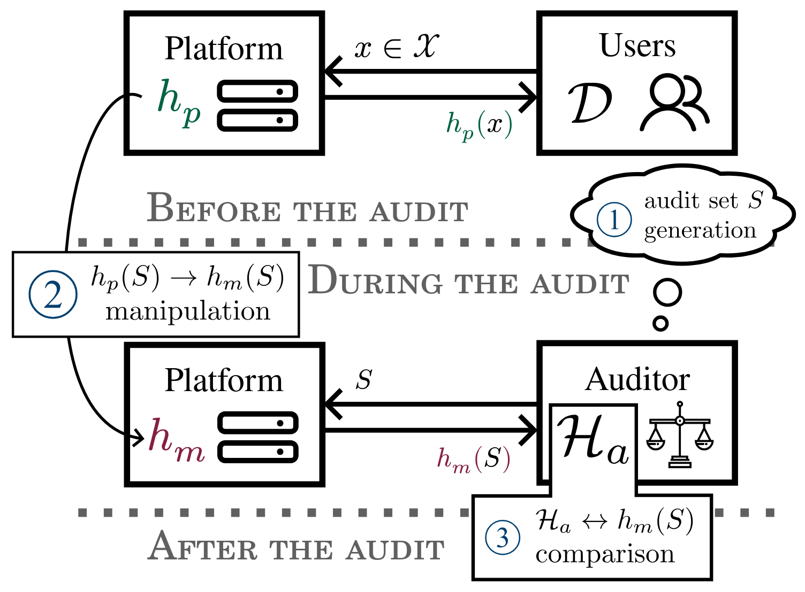
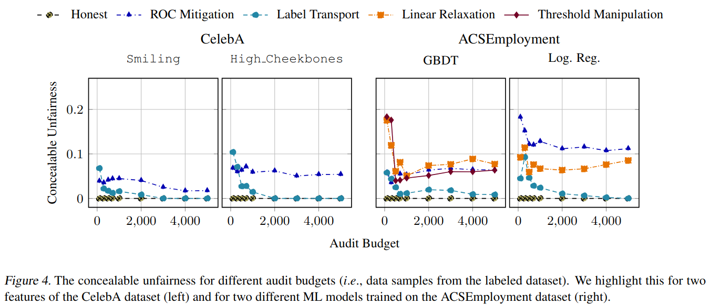

Robust ML Auditing using Prior Knowledge
2025-05-01Do you remember Dieselgate? The car computer would detect when it was on a test-bench and reduce the engine power to fake environmental compliance. Well, this can happen with AI regulation too.
An audit is pretty straightforward.
- I, the auditor 🕵️ come up with questions to ask your model.
- You, the platform 😈 answer my questions.
- I look at your answers and decide whether your system abides by the law by computing a series of aggregate metrics.

Now, you know the metric, you know the questions, and I don't have access to your model. Thus, nothing prevents you from manipulating the answers of your model to pass the audit. And this is very easy! In fact, any fairness mitigation method can be transformed into an audit manipulation attack.
There are two main approaches to avoid manipulations.
- 🔒Crypto guarantees: the model provider is forced to commit their model and sign every answer.
- 📐Clever ML tricks: the auditor uses information about the model (training data, model structure, ...) to understand what is a "good answer".
In this paper, we formalize the second approach as a search for efficient "audit priors". We instantiate our framework with a simple idea: just look at the accuracy of the platform's answers. Our experiments show that this can help reduce the amount of unfairness a platform could hide.

If you want to read more about this, I encourage you to read the paper, but not only! Recently, there has been a lot of exciting works on robust audits, here are a few I enjoyed:
- Verifiable evaluations of machine learning models using zkSNARKs
- P2NIA: Privacy-Preserving Non-Iterative Auditing
- ExpProof : Operationalizing Explanations for Confidential Models with ZKPs
- On the relevance of APIs facing fairwashed audits
- OATH: Efficient and Flexible Zero-Knowledge Proofs of End-to-End ML Fairness